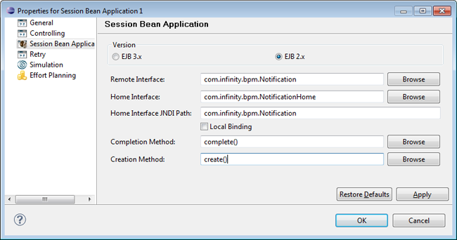
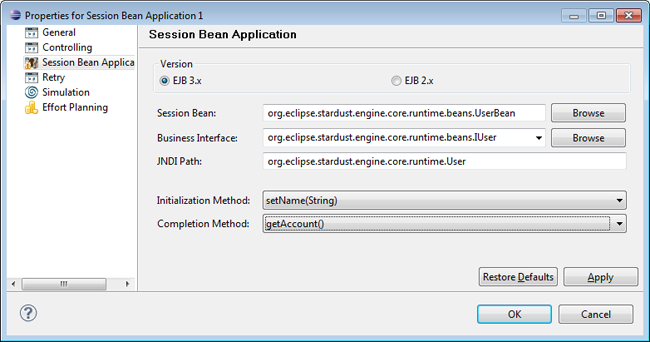
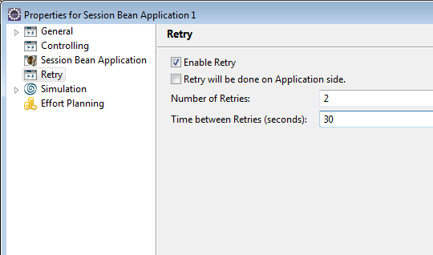

Session Bean applications allow to instantiate a stateful or stateless Session Bean and execute a method on it. To achieve this, at modeling time you have to specify
The create method parameters will be exposed as IN access points named x InitParam n where x is the first letter of the class name and n is a consecutive number, starting with 1.
The completion method parameters will be exposed as IN access points named x Param n where x is the first letter of the class name and n is a consecutive number, starting with 1. The return value of the completion method, if any, will be exposed as an OUT access point returnValue. Let's consider a Session Bean ProcessInvoice used in a Session Bean application with the following create method and completion method chosen:
public interface ProcessInvoiceHome extends EJBHome
{
ProcessInvoice create (Invoice invoice, java.util.Date receivingDate);
...
public interface ProcessInvoice extends EJBObject
{
Invoice addItem(InvoiceItem item);
This will result in the following access points for create method parameters and completion method parameters:
These settings are accessed in Session Bean application types in the Process Workbench.
To specify a Session Bean application in the Process Workbench:
Please refer to the section System Integration for detailed information on integrating session beans.
Choose the property values for:
Note that for accomplishing this step it is necessary to have the home interface and remote interface classes in the class path of the Process Workbench.
To test a local class as a mock Session Bean, check the Local Binding check box. There has to be an implementation of the home interface.

Figure: Specifying EJB 2.x Session Beans
The property page for EJB 3.x contains the Eclipse class browser entry Bean Class to enter the bean class.
Fill in the values for the following entries:

Figure: Specifying EJB 3.x Session Beans
Arbitrary classes can be selected. If the selected class does not satisfy the EJB 3.0 beans requirements, an error status is displayed.
A combo box for the Business Interface is provided with:
Once an appropriate bean class has been selected, the combo box is populated accordingly, applying the rules regarding business interfaces of EJB 3.0 session beans:
Instead of entering the business interface via browsing of bean classes, it can be entered directly or via browsing.
The JNDI path can be entered if it cannot be derived from the bean class properties.
A combo box for the selection of the Completion Method is provided as well as a combo box for the Initialization Method. Both methods will be invoked at runtime.
The configurable retry mechanism provides the facility to retry an operation in case the target service is temporarily unavailable.
For more information, please refer to Retry Mechanism of Non-interactive Applications section of the Applications Concept chapter.
If you enable the Retry functionality for a Session Bean application, you have to define the number of retries and the time between retries in seconds. Note that the maximum number of retries is 10 and the maximum time between retries is restricted to 60 seconds. Additionally you can enable the retry to be performed on application side and thus disable a retry on engine side.

An application with an enabled retry functionality will retry for the defined number of times with a pause of the defined number of seconds, until it succeeds. If the application still fails after the defined number or time, it will no longer retry.